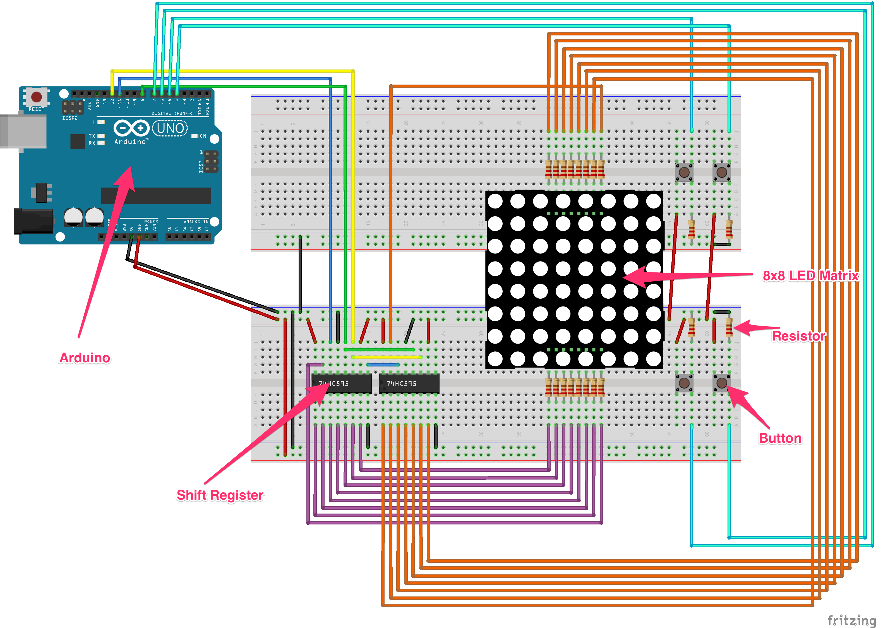
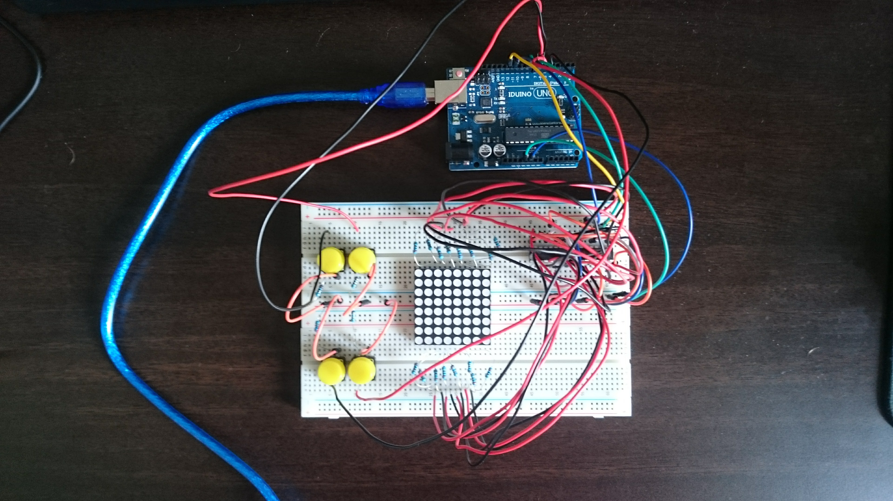

Hardware information and schematics
The Playduino game engine is built from parts found in the standard arduino kits. Following the above schematic and using the following parts the game console can be built.
The final board looks as follows:
